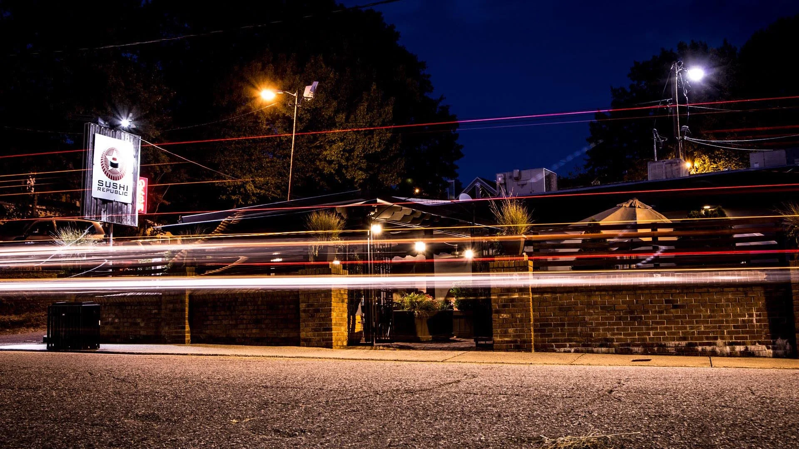
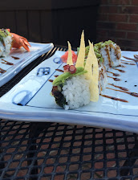
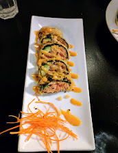
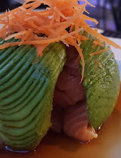

Sushi Republic
Address: 329 Tate St, Greensboro, NC 27403
Phone: 336-274-6684
Hours: M-F 11:30AM-2:30PM, 5-9:30PM.
SAT 5-10PM

Spider Jr Roll
(Credit: Sushi Republic, Google Reviews)
Deep fried soft shell crab, avocado, cucumber, eel sauce

Sweet Potato Tempura
(Credit: Sushi Republic, Google Reviews)
Sweet potato tempura, cucumber, avocado

Salmon Avocado Sashimi
(Credit: Sushi Republic, Google Reviews)
Salmon poke wrapped in avocadowith ponzu sauce